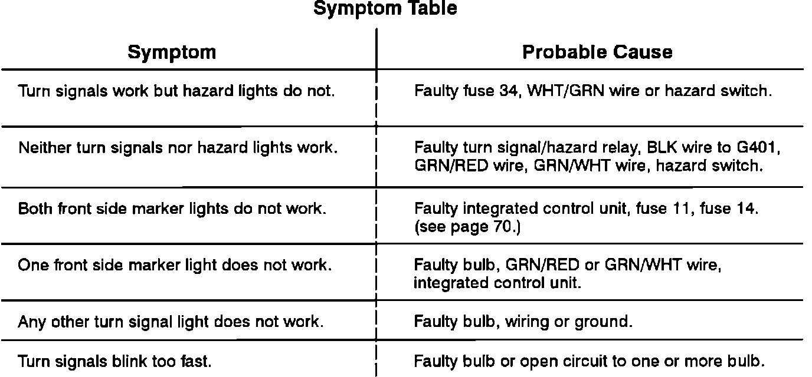

Turn Signals: Testing and Inspection
Turn Signal And Hazard Lamps Troubleshooting:

1. Check fuse 34 by visual inspection.
2. Check G301 by observing indicators.
3. Check G521 (Hatchback) G621 (Sedan) by observing taillights.
4. Check G201 by observing the right front marker light.